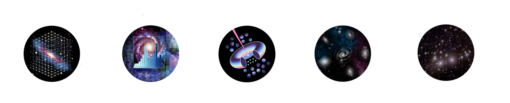
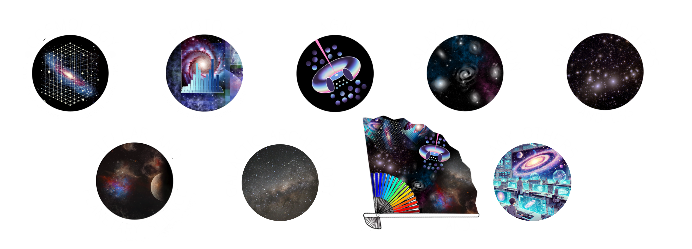

A new medium-band imaging survey with Hyper Suprime-Cam on the Subaru Telescope,
designed to investigate key questions in cosmology, galaxy evolution and AGN, Galactic archaeology, stellar and planetary science, and calibrate photometric redshift estimates in Stage IV surveys.
Niji means “rainbow” in Japanese: a survey identity built around the idea of decomposing the optical-to-near-infrared sky into 16 colors, to unveil the physical processes that shape galaxies, black holes, and the large-scale structure of the Universe.
A wide-field medium-band survey for the next decade of optical astronomy
HSC-Niji combines the wide-field capability of Hyper Suprime-Cam with medium-band
quasi-spectral information, bridging broad-band imaging and spectroscopy. The survey is
designed to improve photometric redshifts, detect emission-line populations, select
rare objects, and connect galaxies and active black holes to their environments.
390–980 nm window
16 medium-band filters
HSC wide field of view
Filters design
Medium-band filters
Sixteen medium-band filters organised in four telescope quadrants (MBQ1 to MBQ4) provide low-resolution spectra, enabling sharper physical interpretation than broad-band colors alone.
HSC-Niji is designed as an interdisciplinary platform spanning cosmology, photo-z,
AGN, galaxy evolution, clusters and large-scale structure, Galactic archaeology,
and stellar and planetary science.

Cosmology
Use precision colors, weak-lensing information, and cross-correlations to constrain the evolution of the Universe.
Photometric Redshifts
Resolve medium-band spectral features to improve redshift precision and reduce catastrophic outliers.
AGN
Select active galactic nuclei and investigate black-hole growth, dual AGN, mergers, and their environments.
Galaxy Evolution
Trace galaxy growth, star formation, quenching, morphology, and environment across cosmic time.
Galaxy Clusters & LSS
Map galaxy clusters, large-scale structure, and the environmental processes connecting galaxies across the cosmic web.

Galactic Archaeology
Reconstruct the Milky Way’s assembly history through its stellar populations, chemistry, and Galactic structure.
Stellar & Planetary Science
Study stellar populations and planetary-system science through consistent, information-rich multiband imaging.
Community
Workshops
Workshop information and material connected to the HSC medium-band
survey program and the broader HSC-Niji science community.